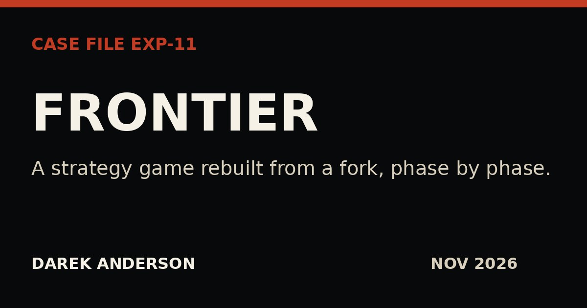

EXP-11
Frontier
This is just for fun, I wanted slightly higher complexity. OpenFront is a lot of fun, but I wanted to nerd out and expand the systems in it.
IN DEVELOPMENT

BUILT
Phase 1 removed the original game’s brand (brand gate 49 of 49). Phase 2 rebuilt the resource bar as five chips, including Gold. Phase 3 added biome generation and a terrain renderer, cutting the speckle and bright-dot artifacts the original renderer produced (gates 69 of 69, typecheck clean). Phase 4 redrew every referenced icon and sprite atlas in one visual family, and deleted the 1,138-file upstream flag pack, replacing it with seeded heraldic marks with zero collisions. The shipped bundle went from 2,260 files to 1,009.
WHAT BROKE
The first playtest verdict was that the game still looked like the thing it was forked from. That verdict, not a roadmap, set the phase plan: identity first, then systems, then terrain, then art. Two gaps are on the record. Fifteen help screenshots still show the old UI and wait on a Phase 5 re-shoot. Audio is untouched; whether it is licensed, procedural, commissioned, or generated is an open decision.
HOW I JUDGE IT
Each phase merges only when its gates pass: the brand gate for identity, test gates and typecheck for systems, and a recognizability check for the visual work. If the build still reads as the original game, the phase is not done, whatever the tests say.
RESULTS
Playable on his PC, singleplayer against AI. Not public yet: hosting and the audio route are open decisions, and his PC copy is kept current by hand.